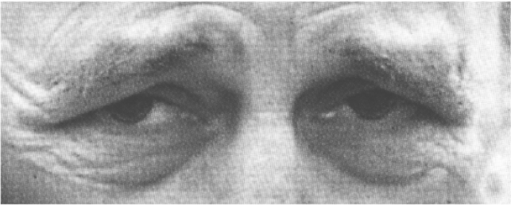
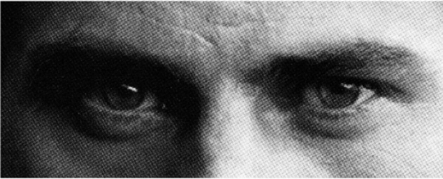

<!DOCTYPE html>
<meta charset="UTF-8">
<html>
  <head>
    <title>Mindspace</title>
    <link rel="icon" type="image/png" href="static/media/favicon.ico">
    <link rel="stylesheet" href="static/jspsych/css/jspsych.css"></link>
    <script src="static/jspsych/jspsych.js"></script>
    <script src="static/jspsych/plugins/jspsych-html-slider-response.js"></script>
    <script src="static/jspsych/plugins/jspsych-audio-keyboard-response.js"></script>
    <script src="static/jspsych/plugins/jspsych-video.js"></script>
    <script src="static/jspsych/plugins/jspsych-survey-text.js?v=6"></script>
    <script src="static/jspsych/plugins/jspsych-html-keyboard-response.js"></script>
    <script src="static/jspsych/plugins/jspsych-survey-multi-choice.js"></script>
    <script src="static/jquery-3.3.1.js"></script>
  </head>
  <body></body>
  <script>
  
  var bienvenida = {
    type: "html-keyboard-response",
    stimulus: "<font size=5.5><p>En la siguiente prueba podrás explorar con nosotros algunas propiedades de la percepción.</p>"+
    "<p>Durante aproximadamente 10 minutos, observarás estímulos variados y responderás preguntas sencillas.</p>"+
      "<p>Presione cualquier tecla para continuar o espere unos segundos</p></font>",
    trial_duration: 8000,
    };
  
  var consentimiento = {
    type: "html-keyboard-response",
    stimulus: "<font size=5.5><p>Continuando con el experimento aceptás aportar tus datos a la investigación, mejorando los gráficos donde ubicaremos tus datos al final, y</p>"+
    "<p>ayudándonos intentar aportar al conocimiento.</p>"+
      "<p>Presione cualquier tecla para continuar o espere unos segundos</p></font>",
    trial_duration: 8000,
    };
  
  var instrucciones = {
      type: "html-keyboard-response",
      stimulus: "<font size=5.5><p>Te mostraremos dos videos de algunos segundos cada uno.</p>"+
          "<p>Observalos atentamente, luego deberás describirlos con el mayor detalle que puedas.</p>" +
          "<p>Si se demora algunos segundos, por favor ten paciencia. Presione cualquier tecla para comenzar o espere unos segundos.</p></font>",
        trial_duration: 8000,
    };

  var video1 = {
      type: 'video',
      width: 910,
      sources: ['./static/media/chinitos.mp4'],
      stop:15,
      autoplay: true, 
      controls: false,
    };
  var video2 = {
      type: 'video',
      width: 950,
      sources: ['./static/media/Londres.mp4'],
      stop:15,
      autoplay: true, 
      controls: false,
    };
  
  var descripcion = {
        type: 'survey-text',
        questions: [
        {prompt: 'Describí el video con el mayor detalle que puedas.', value:'', rows: 30, colums: 400}
        ],
        button_label: 'Enviar',
    };

var audios = [];
var file = '';
var n = 3;
var i = 0;
file = './static/media/audios/' + i.toString() + '.mp3'
var audio = {
      type: 'survey-text',
        questions: [
        {prompt: '<p>Describí el audio con el mayor detalle que puedas.</p><audio controls><source src='+file+' type="audio/mp3"></audio>', 
        value:'', rows: 30, colums: 400}
        ],
      button_label: 'Enviar',
      }
audios.push(audio)

for (i = 1; i < n + 1; i++) { 
    file = './static/media/audios/' + i.toString() + '.ogg'
    var audio = {
      type: 'audio-keyboard-response',
      choices: ['e', 'a'],
      prompt: '<p>Qué tipo de acorde es?</p><p>Presione "e" para menor, "a" para mayor.</p>',
      stimulus : file
      };
      audios.push(audio)
};


cols = 12
var imgs_colores = [];
for (var i = 1; i <= cols; i++) {
  imgs_colores.push("img/cell_img_" + i + ".jpg");
}

var colores = {
    type: 'free-sort',
    stimuli: imgs_colores,
    prompt: "<p>Ordenar los colores según su gradiente</p>"
};


var genero = {
    type:'html-slider-response',
    labels:['Mujer', 'Hombre'],
    stimulus: 'Indique su género',
    button_label: 'Continuar'
}

var historia = {
      type: "html-keyboard-response",
      stimulus: "<font size=5.5><p>Lea el siguiente relato. Visualizá, imaginá, y sentí los escenarios lo más nítidamente que puedas.</p>"+
          "<p></p>" +
          "<p>Apreta 'y' para continuar.</p></font>",
        trial_duration: 8000,
        choices : ['y']
    };

var mate = {
  type: 'survey-multi-choice',
  questions: [{prompt: "Un palo de Hockey y una bocha vale $1,10, sabiendo que el palo vale $1,00 más que la bocha. ¿Cuánto vale la bocha?", 
          options: ['1,05', '0,05', '0,95', '0,10'] , horizontal:true,required:true}],
};

options_ = ['0 años (nada)',1,2,3,4,5,6,7,8,9, '10 años']
var años = {
    type: 'survey-multi-choice',
    preamble: 'Indique durante cuantos años sostuvo las siguientes actividades:',
    questions: [{prompt: "Interpretación o composición musical", options: options_, horizontal:true,required:true},
    {prompt: "Actividad física", options: options_, horizontal:true, required:true},
    {prompt: "Deporte", options: options_, horizontal:true,required:true},
    {prompt: "Artes plásticas", options: options_, horizontal:true, required:true},
    {prompt: "Artes escénicas", options: options_, horizontal:true, required:true},
    {prompt: "Artes vistuales / diseño / fotografía", options: options_, horizontal:true, required:true},
    {prompt: "Investigación científica", options: options_, horizontal:true, required:true},
    {prompt: "Programación", options: options_, horizontal:true, required:true},
    ],
    button_label: 'Continuar',
};

options_ = ['0 minutos', '0-30', '30-60 minutos', '1-2 horas', '2-3', '3-5', '5 horas o más']  
var horas = {
    type: 'survey-multi-choice',
    preamble: 'Indique cuantas horas en promedio dedica por día a las siguientes actividades:',
    questions: [{prompt: "Interpretación o composición musical", options: options_, horizontal:true,required:true},
    {prompt: "Actividad física", options: options_, horizontal:true, required:true},
    {prompt: "Deporte", options: options_, horizontal:true,required:true},
    {prompt: "Artes plásticas", options: options_, horizontal:true, required:true},
    {prompt: "Artes escénicas", options: options_, horizontal:true, required:true},
    {prompt: "Artes vistuales / diseño / fotografía", options: options_, horizontal:true, required:true},
    {prompt: "Investigación científica", options: options_, horizontal:true, required:true},
    {prompt: "Programación", options: options_, horizontal:true, required:true},
    {prompt: "Netflix", options: options_, horizontal:true, required:true},
    {prompt: "Televisión", options: options_, horizontal:true, required:true},
    {prompt: "Facebook", options: options_, horizontal:true, required:true},
    {prompt: "Instagram", options: options_, horizontal:true, required:true},
    {prompt: "Trabajo en PC", options: options_, horizontal:true, required:true},
    ],
    button_label: 'Continuar',
};


options_ = [1,2,3,4,5,6,7,8,9,10]  
var subjetivo = {
    type: 'survey-multi-choice',
    preamble: 'Del 1 al 10, puntúe según la importancia subjetiva que tiene para vos:',
    questions: [{prompt: "Interpretación o composición musical", options: options_, horizontal:true,required:true},
    {prompt: "Audición", options: options_, horizontal:true, required:true},
    {prompt: "Visión", options: options_, horizontal:true,required:true},
    {prompt: "Gusto", options: options_, horizontal:true, required:true},
    {prompt: "Lenguaje", options: options_, horizontal:true, required:true},
    {prompt: "Emoción", options: options_, horizontal:true, required:true},
    {prompt: "Olfato", options: options_, horizontal:true, required:true},
    {prompt: "Tacto, calor", options: options_, horizontal:true, required:true},
    {prompt: "Tacto, texturas", options: options_, horizontal:true, required:true},
    {prompt: "Posición del cuerpo", options: options_, horizontal:true, required:true},
    {prompt: "Imaginación", options: options_, horizontal:true, required:true},
    {prompt: "Orientación en el tiempo", options: options_, horizontal:true, required:true},
    {prompt: "Orientación en el espacio", options: options_, horizontal:true, required:true},
    {prompt: "Afecto", options: options_, horizontal:true, required:true},
    {prompt: "Intelecto", options: options_, horizontal:true, required:true},
    {prompt: "Colores", options: options_, horizontal:true, required:true},
    {prompt: "Dia (0) o noche (10)", options: options_, horizontal:true, required:true},
    
    ],
    button_label: 'Continuar',
};
var choice = {
    type: 'survey-multi-choice',
    questions: [{prompt: "¿Estudiás o estudiaste alguna ciencias exacta?", options: ["Sí", "No"], required:true}],
    button_label: 'Continuar',
};

var empatia = {type: 'survey-multi-choice',
    preamble: '¿Qué emoción está sintiendo la persona? Elija la opción correcta:',
    questions: [{prompt: "", options: ["Alegre", "Compasive", 'Irritade', 'Aburride'], horizontal:true, required:true},
    {prompt: "", options: ["Aterrorizade", "Preocupade", 'Arrogante', 'Moleste'], horizontal:true, required:true},
    {prompt: "", options: ["Chistose", "Conmocionade", 'Deseose', 'Convencide'], horizontal:true, required:true},
    {prompt: "", options: ["Chistose", "Insistente", 'Divertide', 'Relajade'], horizontal:true, required:true},
    ],
    button_label: 'Continuar',
}

var personales = {
    type: 'survey-text',
    questions: [
      {prompt: '¿Cuántos años tenés?', value: '', columns: 10},
      {prompt: '¿Cuántas horas de sueño tuviste la noche anterior?', value: '', columns: 20},
      {prompt: '¿En qué barrio vivís?', value: '', columns: 10},
      {prompt: 'Ingresá tu altura y peso aproximadamente ("ej. 175 cm, 75 kg") ', value: '', columns: 20},
      {prompt: '¿Tiene algun condición psiquiátrica?', value: '', columns: 20},
    ],
    button_label: 'Continuar',
}; 

var academia = {
      type: 'survey-text',
      questions:[
      {prompt: '¿Qué carrera estudiás o estudiaste?', value: '', columns: 30},
      {prompt: '¿Cuál es tu nivel de formación académica? Ej. "Secundario Completo", "Posgrado Incompleto", ... ', value: '', columns: 20},
      ],
    button_label: 'Continuar'}

var despedida = {
  type: "html-keyboard-response",
  stimulus: "<p>Muchas gracias!</p><p>De parte de Romi, Liber y Mati.",
} 

//timeline es la serie de pasos del experimento
  jsPsych.init({
    timeline: [bienvenida, instrucciones, genero, historia, colores, 
    video1, descripcion, video2, descripcion, audios, mate, empatia, 
    personales, años, horas, subjetivo, choice, academia, despedida].flat(),

    on_finish: function() { $.ajax({
                        type: "POST",
                        data: {'data' : jsPsych.data.get().csv()},
                        url: "http://4c641a70.ngrok.io/postdata",
                        headers: {
                        'Content-Type': 'application/x-www-form-urlencoded'}
                        })
                    }
    
  });
  //
</script>
</html>>